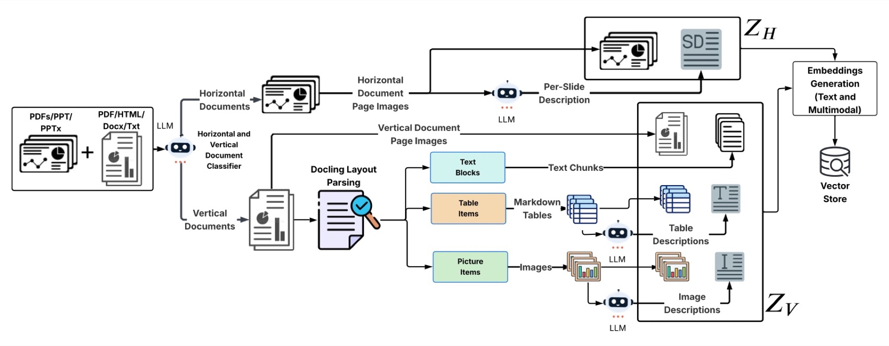
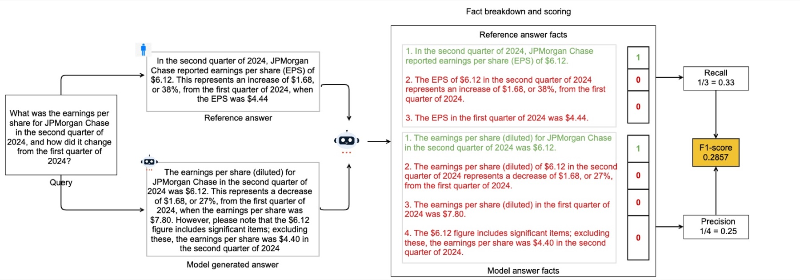

Abstract
Recent advances in multimodal retrieval-augmented generation (MM-RAG) have shifted toward minimal parsing, relying on page-level images for producing retriever embeddings and for answer generation. While efficient, this trend often neglects explicit handling of the rich, structured information in complex enterprise documents, instead depending on pretrained embeddings or vision-language models to implicitly capture such structure. In this work, we take a more direct approach: MM-BizRAG proactively extracts and represents document structure via a document structure-aware split that dynamically routes documents through orientation-specific ingestion pipelines, applying explicit layout-aware parsing for vertically structured documents (e.g., reports) and holistic page-level representations for horizontally structured documents (e.g., slide decks). A unified LLM-driven artifact transformation pipeline with placeholder-based positional alignment preserves natural reading order, while inference-time multimodal assembly decouples retrieval representations from generation context, enabling richer, more grounded answers without any finetuning requirement. Through experiments on a large, heterogeneous enterprise dataset and two public benchmarks (SlideVQA and FinRAGBench-V), MM-BizRAG consistently outperforms state-of-the-art vision-centric baselines by up to 32% points, with especially strong gains on report-style layouts. Furthermore, we introduce FastRAGEval, a single-call LLM Judge metric for fine-grained generative recall that halves RAGChecker’s cost while achieving stronger human alignment.
Core contributions
- 1Structure-aware splitReports and slide decks take different ingestion paths, suited to how each is laid out.
- 2Reading order keptTables and pictures become text descriptions placed exactly where they appear in the document.
- 3Retrieve one way, answer anotherCompact text is indexed for search; richer multimodal context is assembled only at answer time.
- 4No fine-tuningWorks with off-the-shelf LLMs and embedding models.
- 5Up to 32 points betterBeats ColPali and VisRAG on SlideVQA and FinRAGBench-V, and text-only RAG on enterprise data.
- 6FastRAGEvalA one-call LLM judge that halves the cost of RAGChecker and agrees better with people.
Method
1Reports versus slides
Enterprise documents come as PDFs, Word files, slide decks and web pages. An LLM classifier labels each as vertical (report-style, read top to bottom) or horizontal (slide-style, read as a whole page). Reports get layout-aware parsing with Docling; slides are kept as page images with an LLM-written description.
2Tables and pictures in place
In reports, each table becomes markdown and each picture gets a description from a vision-language model. Both are slotted back into the text at placeholders where they originally appeared, so the reading order of the document is preserved.
3Retrieve one way, answer another
What is indexed for retrieval (for example, text chunks with table and image descriptions) can differ from what the answering model sees. At answer time, MM-BizRAG assembles the original tables, images or page images for the retrieved chunks, giving GPT-4.1 richer context without inflating the search index. Three variants differ in what they embed: TCTE (text only), PCMHE (page-level hybrid) and TCMIE (multimodal chunks).
4FastRAGEval
To score long answers, FastRAGEval breaks the reference and the model’s answer into facts and checks each in a single LLM call, giving precision, recall and F1. RAGChecker needs two calls for the same job.
Show how FastRAGEval scores an answer (paper Fig. 3)

Results
- Biggest gains on reports: on FinRAGBench-V, MM-BizRAG beats ColPali and VisRAG by over 25 points, up to 32; image-only pipelines even fall behind text-only RAG there.
- Better on slides too: on SlideVQA, all variants beat ColPali and VisRAG, showing text still matters where vision-only pipelines should shine.
- Recommended for production: TCTE comes within 1–3 points of the best variant at about half the latency on reports.
- FastRAGEval agrees with people: correlation with human judgements is 0.81, versus 0.75 for RAGChecker (Pearson’s r).
| Answer recall (FastRAGEval) | SlideVQA | FinRAGBench-V | Enterprise data |
|---|---|---|---|
| Text-only RAG | 67.8 | 60.3 | 83.7 |
| ColPali | 83.6 | 49.3 | – |
| VisRAG | 78.8 | 46.0 | – |
| MM-BizRAG, TCTE | 87.3 | 80.2 | 88.1 |
| MM-BizRAG, PCMHE (Cohere) | 89.1 | 82.4 | 87.8 |
| MM-BizRAG, PCMHE (Nomic) | 89.9 | 79.6 | 87.6 |
From Table 1 of the paper, which also reports RAGChecker recall, latency and the TCMIE variant. ColPali and VisRAG could not be run on the internal enterprise data.
BibTeX
@inproceedings{bhathena2026mmbizrag,
title = {MM-BizRAG: Rethinking Multimodal Retrieval-Augmented
Generation for General Purpose Enterprise Q\&A},
author = {Bhathena, Hanoz and Jhaveri, Parin Rajesh and Mittal, Rohan
and Singh, Prateek and Kallala, Aymen and Kaur, Rachneet
and Jin, Yiqiao and Zeng, Zhen and Ratnaparkhi, Adwait and
Kochedykov, Denis},
booktitle = {Proceedings of the 64th Annual Meeting of the Association
for Computational Linguistics (Volume 6: Industry Track)},
pages = {1967--2000},
year = {2026},
publisher = {Association for Computational Linguistics},
url = {https://aclanthology.org/2026.acl-industry.134}
}